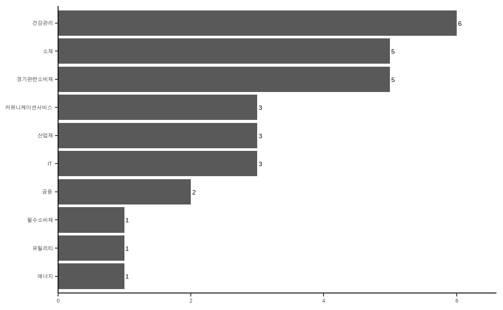
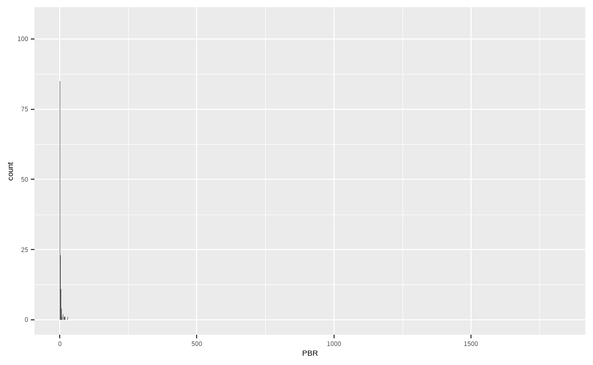
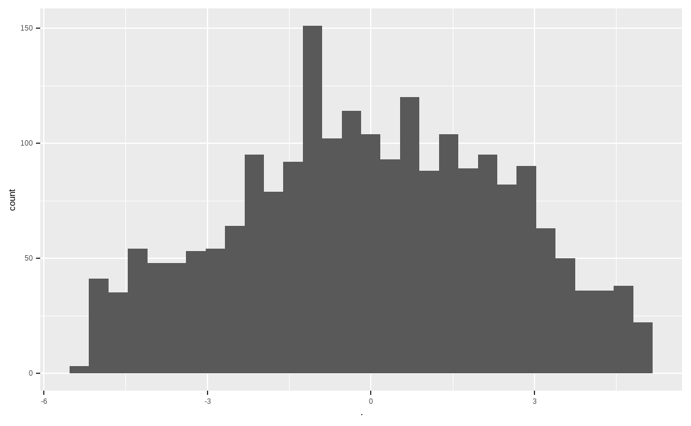
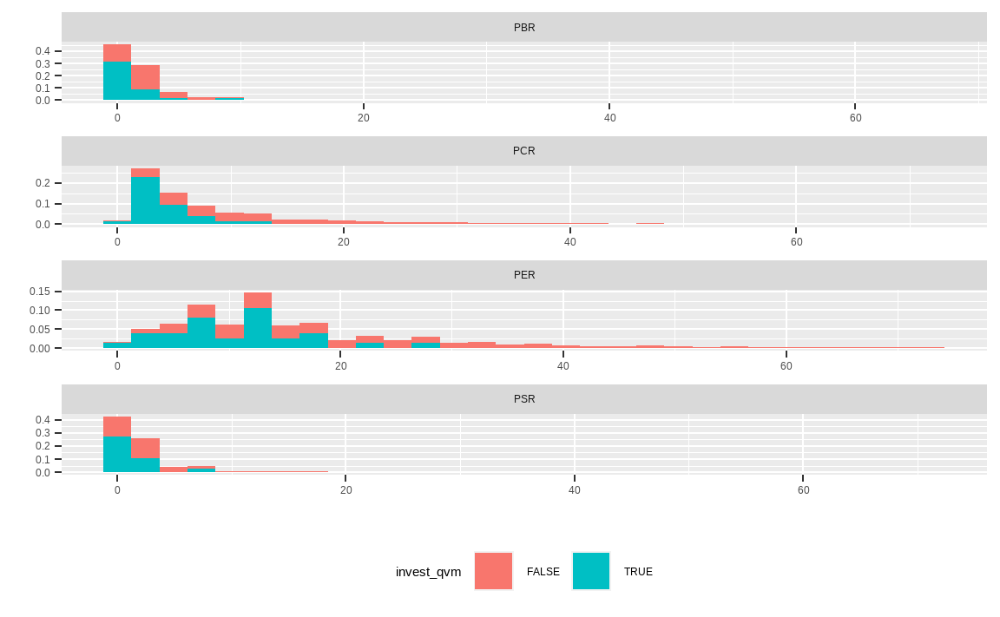

Chapter 10 퀀트 전략을 이용한 종목선정 (심화)
지난 CHAPTER에서는 팩터를 이용한 투자 전략의 기본이 되는 저변동성, 모멘텀, 밸류, 퀄리티 전략에 대해 알아보았습니다. 물론 이러한 단일 팩터를 이용한 투자도 장기적으로 우수한 성과를 보이지만, 여러 팩터를 결합하거나 정밀하게 전략을 만든다면 더욱 우수한 성과를 거둘 수 있습니다.
이번 CHAPTER에서는 섹터별 효과를 없앤 후 포트폴리오를 구성하는 방법, 이상치 데이터 제거 및 팩터 결합 방법, 그리고 멀티팩터 구성 방법을 알아보겠습니다.
10.1 섹터 중립 포트폴리오
팩터 전략의 단점 중 하나는 선택된 종목들이 특정 섹터로 쏠리는 경우가 있다는 점입니다. 특히 과거 수익률을 토대로 종목을 선정하는 모멘텀 전략은 특정 섹터의 호황기에 동일한 섹터의 모든 종목이 함께 움직이는 경향이 있어 이러한 쏠림이 심할 수 있습니다.
먼저 지난 CHAPTER에서 배운 12개월 모멘텀을 이용한 포트폴리오 구성 방법을 다시 살펴보겠습니다.
library(stringr)
library(xts)
library(PerformanceAnalytics)
library(dplyr)
library(ggplot2)
KOR_price = read.csv('data/KOR_price.csv', row.names = 1,
stringsAsFactors = FALSE) %>% as.xts()
KOR_ticker = read.csv('data/KOR_ticker.csv', row.names = 1,
stringsAsFactors = FALSE)
KOR_ticker$'종목코드' =
str_pad(KOR_ticker$'종목코드', 6, 'left', 0)
ret = Return.calculate(KOR_price) %>% xts::last(252)
ret_12m = ret %>% sapply(., function(x) {
prod(1+x) - 1
})
invest_mom = rank(-ret_12m) <= 30기존의 코드와 동일하게, 주식 가격 및 티커 데이터를 불러온 후 최근 12개월 수익률을 구해 상위 30종목을 선택합니다.
KOR_sector = read.csv('data/KOR_sector.csv', row.names = 1,
stringsAsFactors = FALSE)
KOR_sector$'CMP_CD' =
str_pad(KOR_sector$'CMP_CD', 6, 'left', 0)
data_market = left_join(KOR_ticker, KOR_sector,
by = c('종목코드' = 'CMP_CD',
'종목명' = 'CMP_KOR'))해당 종목들의 섹터 정보를 추가로 살펴보기 위해, 섹터 데이터를 불러온 후 left_join() 함수를 이용해 티커와 결합해 data_market에 저장합니다.
data_market[invest_mom, ] %>%
select(`SEC_NM_KOR`) %>%
group_by(`SEC_NM_KOR`) %>%
summarize(n = n()) %>%
ggplot(aes(x = reorder(`SEC_NM_KOR`, `n`),
y = `n`, label = n)) +
geom_col() +
geom_text(color = 'black', size = 4, hjust = -0.3) +
xlab(NULL) +
ylab(NULL) +
coord_flip() +
scale_y_continuous(expand = c(0, 0, 0.1, 0)) +
theme_classic()
group_by() 함수를 이용해 12개월 기준 모멘텀 포트폴리오 종목들의 섹터별 종목수를 계산해준 후 ggplot() 함수를 이용해 이를 그림으로 나타냅니다. 그림에서 알 수 있듯이 특정 섹터에 대부분의 종목이 몰려 있습니다.
따라서 여러 종목으로 포트폴리오를 구성했지만, 이를 분해해보면 특정 섹터에 쏠림이 심하다는 것을 알 수 있습니다. 이러한 섹터 쏠림 현상을 제거한 섹터 중립 포트폴리오를 구성해보겠습니다.
sector_neutral = data_market %>%
select(`종목코드`, `SEC_NM_KOR`) %>%
mutate(`ret` = ret_12m) %>%
group_by(`SEC_NM_KOR`) %>%
mutate(scale_per_sector = scale(`ret`),
scale_per_sector = ifelse(is.na(`SEC_NM_KOR`),
NA, scale_per_sector))- data_market에서 종목코드와 섹터 정보를 선택합니다.
mutate()함수를 통해 미리 계산한 12개월 수익률 정보를 새로운 열에 합쳐줍니다.group_by()함수를 통해 섹터별 그룹을 만들어줍니다scale()함수를 이용해 그룹별 정규화를 해줍니다. 정규화는 \(\frac{x- \mu}{\sigma}\)로 계산됩니다.- 섹터 정보가 없을 경우 NA로 변경합니다.
위의 정규화 과정을 살펴보면, 전체 종목에서 12개월 수익률을 비교하는 것이 아닌 각 섹터별로 수익률의 강도를 비교하게 됩니다. 따라서 특정 종목의 과거 수익률이 전체 종목과 비교해서 높았더라도 해당 섹터 내에서의 순위가 낮다면, 정규화된 값은 낮아집니다.
따라서 섹터별 정규화 과정을 거친 값으로 비교 분석을 한다면, 섹터 효과가 제거된 포트폴리오를 구성할 수 있습니다.
invest_mom_neutral =
rank(-sector_neutral$scale_per_sector) <= 30
data_market[invest_mom_neutral, ] %>%
select(`SEC_NM_KOR`) %>%
group_by(`SEC_NM_KOR`) %>%
summarize(n = n()) %>%
ggplot(aes(x = reorder(`SEC_NM_KOR`, `n`),
y = `n`, label = n)) +
geom_col() +
geom_text(color = 'black', size = 4, hjust = -0.3) +
xlab(NULL) +
ylab(NULL) +
coord_flip() +
scale_y_continuous(expand = c(0, 0, 0.1, 0)) +
theme_classic()
정규화된 값의 랭킹이 높은 상위 30종목을 선택하며, 내림차순을 위해 마이너스(-)를 붙여줍니다. 해당 포트폴리오의 섹터별 구성종목을 확인해보면, 단순하게 포트폴리오를 구성한 것에 대비하여 여러 섹터에 종목이 분산되어 있습니다.
이처럼 group_by() 함수를 통해 손쉽게 그룹별 중립화를 할 수 있으며, 글로벌 투자를 하는 경우에는 지역, 국가, 섹터별로도 중립화된 포트폴리오를 구성하기도 합니다.
10.2 마법공식
하나의 팩터만을 보고 투자하는 것보다, 둘 혹은 그 이상의 팩터를 결합해 투자해야 훨씬 좋은 포트폴리오를 구성할 수 있으며, 이러한 방법을 멀티팩터라고 합니다. 그중에서도 밸류와 퀄리티의 조합은 전통적으로 많이 사용된 방법이며, 대표적인 예가 조엘 그린블라트의 마법공식(Greenblatt 2010)입니다. 이에 앞서, 퀄리티와 밸류 간의 관계, 마법공식의 정의와 구성 방법을 알아보겠습니다.
10.2.1 퀄리티와 밸류 간의 관계
투자의 정석 중 하나는 좋은 기업을 싸게 사는 것입니다. 이를 팩터의 관점에서 이해하면 퀄리티 팩터와 밸류 팩터로 이해할 수도 있습니다.
여러 논문에 따르면 흔히 밸류 팩터와 퀄리티 팩터는 반대의 관계(Novy-Marx 2013)에 있습니다. 먼저 가치주들은 위험이 크기 때문에 시장에서 소외를 받아 저평가가 이루어지는 것이며, 이러한 위험에 대한 대가로 밸류 팩터의 수익률이 높게 됩니다. 반대로 사람들은 우량주에 기꺼이 프리미엄을 지불하려 하기 때문에 퀄리티 팩터의 수익률이 높기도 합니다. 이는 마치 동전의 양면과 같지만, 장기적으로 가치주와 우량주 모두 우수한 성과를 기록합니다. 먼저 퀄리티의 지표인 매출총이익과 밸류 지표인 PBR을 통해 둘 사이의 관계를 확인해 보겠습니다.
library(stringr)
library(dplyr)
KOR_value = read.csv('data/KOR_value.csv', row.names = 1,
stringsAsFactors = FALSE)
KOR_fs = readRDS('data/KOR_fs.Rds')
KOR_ticker = read.csv('data/KOR_ticker.csv', row.names = 1,
stringsAsFactors = FALSE)
data_pbr = KOR_value['PBR']
if ( lubridate::month(Sys.Date()) %in% c(1,2,3,4) ) {
num_col = str_which(colnames(KOR_fs[[1]]), as.character(lubridate::year(Sys.Date()) - 2))
} else {
num_col = str_which(colnames(KOR_fs[[1]]), as.character(lubridate::year(Sys.Date()) - 1))
}
data_gpa =
(KOR_fs$'매출총이익' / KOR_fs$'자산')[num_col] %>%
setNames('GPA')
cbind(data_pbr, -data_gpa) %>%
cor(method = 'spearman', use = 'complete.obs') %>% round(4)## PBR GPA
## PBR 1.0000 -0.1844
## GPA -0.1844 1.0000데이터를 불러온 후 PBR과 GPA(매출총이익/자산)를 구합니다. 그 후 랭킹의 상관관계인 스피어만 상관관계를 구해보면, 서로 간에 반대 관계가 있음이 확인됩니다. PBR은 오름차순, GPA는 내림차순이므로 GPA 앞에 마이너스(-)를 붙여주었습니다.
cbind(data_pbr, data_gpa) %>%
mutate(quantile_pbr = ntile(data_pbr, 5)) %>%
filter(!is.na(quantile_pbr)) %>%
group_by(quantile_pbr) %>%
summarise(mean_gpa = mean(GPA, na.rm = TRUE)) %>%
ggplot(aes(x = quantile_pbr, y = mean_gpa)) +
geom_col() +
xlab('PBR') + ylab('GPA')
이번에는 PBR의 분위수별 GPA 평균값을 구하겠습니다.
ntile()함수를 이용해 PBR을 5분위수로 나누어줍니다.- PBR이 없는 종목은 제외합니다.
group_by()함수를 통해 PBR의 분위수별 그룹을 묶어줍니다.- 각 PBR 그룹별 GPA의 평균값을 구해줍니다.
ggplot()함수를 이용해 시각화를 해줍니다
그림에서 알 수 있듯이 PBR이 낮을수록 GPA도 낮으며, 즉 가치주일수록 우량성은 떨어집니다. 반면에 PBR이 높을수록 GPA도 높으며, 이는 주식의 가격이 비쌀수록 우량성도 높다는 뜻입니다.
이를 이용해 밸류 팩터와 퀄리티 팩터 간의 관계를 나타내면 다음과 같습니다.

그림 10.1: 밸류 팩터와 퀄리티 팩터간의 관계
주가가 쌀수록 기업의 우량성은 떨어지며(①번), 반대로 기업의 우량성이 좋으면 주식은 비싼 경향(③번)이 있습니다. 물론 우량성도 떨어지고 비싸기만한 주식(②번)을 사려는 사람들 아마 없을 겁니다. 결과적으로 우리가 원하는 최고의 주식은 우량성이 있으면서도 가격은 싼 주식(④번)입니다.
10.2.2 마법공식 이해하기
마법공식이란 고담 캐피탈의 설립자이자 전설적인 투자자 조엘 그린블라트에 의해 알려진 투자 방법입니다. 그는 본인의 책 《주식 시장을 이기는 작은 책》에서 투자를 하는데 있어 중요한 두 가지 지표가 있으며, 이를 혼합하면 뛰어난 성과를 기록할 수 있다고 했습니다.
첫 번째 지표는 이율(Earnings Yield)로서 기업의 수익을 기업의 가치로 나는 값입니다. 이는 PER의 역수와 비슷하며, 밸류 지표 중 하나입니다. 두 번째 지표는 투하자본 수익률(Return on Capital)로서 기업의 수익을 투자한 자본으로 나눈 값입니다. 이는 ROE와도 비슷하며, 퀄리티 지표 중 하나입니다. 마법공식은 이 두 가지 지표의 랭킹을 각각 구한 후 랭킹의 합 기준 상위 30개 종목을 1년간 보유한 후 매도하는 전략입니다.
해당 전략은 국내 투자자들에게도 많이 사랑받는 전략이지만 두 지표를 계산하기 위한 데이터를 수집하기 어려워 많은 투자자들이 이율 대신 PER를 사용하고, 투하자본 수익률 대신 ROE를 사용합니다. 그러나 우리가 수집한 데이터를 통해 충분히 원래의 마법공식을 구현할 수 있습니다.
| 팩터 | Value | Quality |
|---|---|---|
| 지표 | 이율 (Earnings Yield) | 투하자본 수익률 (Return On Capital) |
| 계산 | \(\frac{이자\,및\,법인세\,차감전이익}{기업\,가치}\) | \(\frac{이자\,및\,법인세\,차감전이익}{투하자본}\) |
10.2.3 마법공식 구성하기
재무제표 항목을 통해 이율과 투하자본 수익률을 계산하고, 이를 통해 마법공식 포트폴리오를 구성하겠습니다. 먼저 밸류 지표에 해당하는 이익수익률을 계산해보겠습니다. 이익수익률은 이자 및 법인세 차감전이익(EBIT)을 기업가치(시가총액 + 순차입금)로 나눈 값입니다. 이를 분해하면 다음과 같습니다.
\[\begin{equation*} \begin{split} 이익수익률 & = \frac{이자\,및\,법인세\,차감전이익}{기업\,가치} \\ & = \frac{이자\,및\,법인세\,차감전이익}{시가총액 + 순차입금} \\ & = \frac{당기순이익 + 법인세 + 이자비용}{시가총액 + 총부채 - 여유자금} \\ & = \frac{당기순이익 + 법인세 + 이자비용}{시가총액 + 총부채 - (현금 - max(0, 유동부채 - 유동자산 + 현금))} \end{split} \end{equation*}\]
library(stringr)
library(dplyr)
KOR_value = read.csv('data/KOR_value.csv', row.names = 1,
stringsAsFactors = FALSE)
KOR_fs = readRDS('data/KOR_fs.Rds')
KOR_ticker = read.csv('data/KOR_ticker.csv', row.names = 1,
stringsAsFactors = FALSE)
KOR_ticker$'종목코드' =
str_pad(KOR_ticker$'종목코드', 6, 'left', 0)
if ( lubridate::month(Sys.Date()) %in% c(1,2,3,4) ) {
num_col = str_which(colnames(KOR_fs[[1]]), as.character(lubridate::year(Sys.Date()) - 2))
} else {
num_col = str_which(colnames(KOR_fs[[1]]), as.character(lubridate::year(Sys.Date()) - 1))
}
# 분자
magic_ebit = (KOR_fs$'지배주주순이익' + KOR_fs$'법인세비용' +
KOR_fs$'이자비용')[num_col]
# 분모
magic_cap = KOR_value$PER * KOR_fs$'지배주주순이익'[num_col]
magic_debt = KOR_fs$'부채'[num_col]
magic_excess_cash_1 = KOR_fs$'유동부채' - KOR_fs$'유동자산' +
KOR_fs$'현금및현금성자산'
magic_excess_cash_1[magic_excess_cash_1 < 0] = 0
magic_excess_cash_2 =
(KOR_fs$'현금및현금성자산' - magic_excess_cash_1)[num_col]
magic_ev = magic_cap + magic_debt - magic_excess_cash_2
# 이익수익률
magic_ey = magic_ebit / magic_ev가치지표, 재무제표, 티커 데이터를 불러온 후 재무제표 열 개수를 구합니다. 그후 분자와 분모 항목에 해당하는 부분을 하나씩 계산합니다. 먼저 분자 부분인 이자및 법인세 차감전이익은 지배주주 순이익에 법인세비용과 이자비용을 더해준 후 최근년도 데이터를 선택합니다.
분모 부분은 시가총액, 총 부채, 여유자금 총 세 가지로 구성되어 있습니다.
- 우리가 가지고 있는 밸류 데이터와 재무제표 데이터를 통해 시가총액을 역산할 수 있습니다. PER 값에 Earnings를 곱해주면 시가총액이 계산됩니다. 이를 통해 계산된 시가총액을 HTS나 금융 웹사이트의 값과 비교하면 거의 비슷함이 확인됩니다.
\[\begin{equation*} \begin{split} PER \times Earnings & = \frac{Price}{Earnings/Shares} \times Earnings \\ & = \frac{Price \times Shares}{Earnings} \times Earnings \\ & = Price \times Shares = Market\,Cap \end{split} \end{equation*}\]
- 총 부채는 부채 항목을 사용합니다.
- 여유자금은 두 단계에 걸쳐 계산합니다. 먼저 유동부채 - 유동자산 + 현금 값을 구해준 후 0보다 작은 값은 모두 0으로 바꿔줍니다. 이 값을 현금 및 현금성자산 항목에서 차감해 최종적인 여유자금을 구합니다.
분자와 분모 부분을 나누어주면 이익수익률을 계산할 수 있습니다.
다음으로 퀄리티 지표에 해당하는 투하자본 수익률을 계산하겠습니다. 해당 값은 이자 및 법인세 차감전이익(EBIT)를 투하자본(IC)으로 나누어 계산되며, 이를 분해하면 다음과 같습니다.
\[\begin{equation*} \begin{split} 투하자본\,수익률 & = \frac{이자\,및\,법인세\,차감전이익}{투하자본} \\ & = \frac{당기순이익 + 법인세 + 이자비용}{(유동자산 - 유동부채) + (비유동자산 - 감가상각비)} \end{split} \end{equation*}\]
magic_ic = ((KOR_fs$'유동자산' - KOR_fs$'유동부채') +
(KOR_fs$'비유동자산' - KOR_fs$'감가상각비'))[num_col]
magic_roc = magic_ebit / magic_ic투하자본 수익률은 비교적 쉽게 계산할 수 있습니다. 분모에 해당하는 투하자본의 경우 재무제표 항목을 그대로 사용하면 되며, 분자인 이자 및 법인세 차감전이익은 위에서 이미 구해둔 값을 사용하면 됩니다.
이제 두 지표를 활용해 마법공식 포트폴리오를 구성하겠습니다.
invest_magic = rank(rank(-magic_ey) + rank(-magic_roc)) <= 30
KOR_ticker[invest_magic, ] %>%
select(`종목코드`, `종목명`) %>%
mutate(`이익수익률` = round(magic_ey[invest_magic, ], 4),
`투하자본수익률` = round(magic_roc[invest_magic, ], 4))## 종목코드 종목명 이익수익률 투하자본수익률
## 71 137310 에스디바이오센서 0.1297 0.9308
## 124 096530 씨젠 0.2274 0.9513
## 342 036830 솔브레인홀딩스 1.3806 1.2819
## 555 009410 태영건설 0.1980 0.3550
## 557 035890 서희건설 0.1889 0.2756
## 563 024720 한국콜마홀딩스 0.2567 0.2462
## 571 206640 바디텍메드 0.1391 0.4606
## 639 034810 해성산업 0.3917 0.3686
## 674 068290 삼성출판사 0.1619 0.3570
## 711 084650 랩지노믹스 0.1773 0.6346
## 715 038290 마크로젠 0.2411 0.4182
## 788 192440 슈피겐코리아 0.2910 0.2143
## 902 031980 피에스케이홀딩스 0.2383 0.2629
## 1028 187870 디바이스이엔지 0.2142 0.4002
## 1035 352700 씨앤투스성진 0.1749 0.5877
## 1219 000700 유수홀딩스 0.8342 0.2760
## 1281 058110 멕아이씨에스 0.1711 0.5695
## 1302 016250 SGC이테크건설 0.3098 1.6546
## 1335 263690 디알젬 0.1571 0.4081
## 1402 137940 넥스트아이 0.4361 0.4366
## 1468 229000 젠큐릭스 0.2596 0.6033
## 1521 000440 중앙에너비스 0.2098 0.3965
## 1548 238490 힘스 0.2066 0.2494
## 1619 090710 휴림로봇 0.3104 0.5826
## 1646 046940 우원개발 0.1897 0.2650
## 1727 002870 신풍제지 0.5192 0.4575
## 1730 083550 케이엠 0.3483 0.3613
## 1781 037350 성도이엔지 0.5560 0.4727
## 1794 032940 원익 0.5231 0.4483
## 1938 007120 미래아이앤지 1.4035 0.2713이익수익률과 투하자본 수익률의 랭킹을 각각 구해주며, 내림차순으로 값을 구하기 위해 마이너스(-)를 붙여줍니다. 그 후 두 값의 합의 랭킹 기준 상위 30종목을 선택한 후 종목코드, 종목명과 각 지표를 확인합니다.
10.3 이상치 데이터 제거 및 팩터의 결합
모든 데이터 분석에서 중요한 문제 중 하나가 이상치(극단치, Outlier) 데이터를 어떻게 처리할 것인가입니다. 과거 12개월 수익률이 10배인 주식이 과연 모멘텀 관점에서 좋기만 한 주식인지, ROE가 100% 넘는 주식이 과연 퀄리티 관점에서 좋기만 한 주식인지 고민이 되기 마련입니다.
따라서 이러한 이상치를 제외하고 분석할지, 포함해서 분석할지를 판단해야 합니다. 만일 이상치를 포함한다면 그대로 사용할 것인지, 보정해 사용할 것인지도 판단해야 합니다.
우리가 가지고 있는 데이터에서 이상치 데이터를 탐색해보겠습니다.
library(magrittr)
library(ggplot2)
KOR_value = read.csv('data/KOR_value.csv', row.names = 1,
stringsAsFactors = FALSE)
max(KOR_value$PBR, na.rm = TRUE)## [1] 1825KOR_value %>%
ggplot(aes(x = PBR)) +
geom_histogram(binwidth = 0.1)
국내 종목들의 PBR 히스토그램을 그려보면 오른쪽으로 꼬리가 매우 긴 분포를 보이고 있습니다. 이는 PBR이 무려 1825.45인 이상치 데이터가 있기 때문입니다. 이처럼 모든 팩터 지표에는 극단치 데이터가 있기 마련이며, 이를 처리하는 방법을 알아보겠습니다.
10.3.1 트림(Trim): 이상치 데이터 삭제
트림은 이상치 데이터를 삭제하는 방법입니다. 위의 예제에서 이상치에 해당하는 상하위 1% 데이터를 삭제하겠습니다.
library(dplyr)
value_trim = KOR_value %>%
select(PBR) %>%
mutate(PBR = ifelse(percent_rank(PBR) > 0.99, NA, PBR),
PBR = ifelse(percent_rank(PBR) < 0.01, NA, PBR))
value_trim %>%
ggplot(aes(x = PBR)) +
geom_histogram(binwidth = 0.1)
percent_rank() 함수를 통해 백분위를 구한 후 상하위 1%에 해당하는 데이터들은 NA로 변경했습니다. 결과적으로 지나치게 PBR이 낮은 종목과 높은 종목은 제거되어 x축의 스케일이 많이 줄어든 모습입니다.
평균이나 분산같이 통곗값을 구하는 과정에서는 이상치 데이터를 제거하는 것이 바람직할 수 있습니다. 그러나 팩터를 이용해 포트폴리오를 구하는 과정에서 해당 방법은 잘 사용되지 않습니다. 데이터의 손실이 발생하게 되며, 제거된 종목 중 정말로 좋은 종목이 있을 수도 있기 때문입니다.
10.3.2 윈저라이징(Winsorizing): 이상치 데이터 대체
포트폴리오 구성에서는 일반적으로 이상치 데이터를 다른 데이터로 대체하는 윈저라이징 방법이 사용됩니다. 예를 들어 상위 99%를 초과하는 데이터는 99% 값으로 대체하며, 하위 1% 미만의 데이터는 1% 데이터로 대체합니다. 즉, 좌우로 울타리를 쳐놓고 해당 범위를 넘어가는 값을 강제로 울타리에 맞춰줍니다.
value_winsor = KOR_value %>%
select(PBR) %>%
mutate(PBR = ifelse(percent_rank(PBR) > 0.99,
quantile(., 0.99, na.rm = TRUE), PBR),
PBR = ifelse(percent_rank(PBR) < 0.01,
quantile(., 0.01, na.rm = TRUE), PBR))
value_winsor %>%
ggplot(aes(x = PBR)) +
geom_histogram(binwidth = 0.1)
역시나 percent_rank() 함수를 통해 백분위를 구한 후 해당 범위를 초과할 경우 각각 상하위 1% 데이터로 변형해줍니다. 그림을 살펴보면 x축 양 끝부분의 막대가 길어진 것을 확인할 수 있습니다.
10.3.3 팩터의 결합 방법
밸류 지표의 결합, 퀄리티 지표의 결합, 마법공식 포트폴리오를 구성할 때 단순히 랭킹을 더하는 방법을 사용했습니다. 물론 투자 종목수가 얼마 되지 않거나, 개인 투자자의 입장에서는 이러한 방법이 가장 단순하면서도 효과적일수 있습니다. 그러나 전문투자자의 입장이거나 팩터를 분석하는 업무를 할 경우 이처럼 단순히 랭킹을 더하는 방법은 여러 가지 문제를 안고 있습니다.
library(tidyr)
KOR_value %>%
mutate_all(list(~min_rank(.))) %>%
gather() %>%
ggplot(aes(x = value)) +
geom_histogram() +
facet_wrap(. ~ key) 
앞의 그림은 각 밸류 지표의 랭킹을 구한 후 히스토그램으로 나타낸 것입니다. 랭킹을 구하는 것의 가장 큰 장점은 극단치로 인한 효과가 사라진다는 점과 균등한 분포를 가진다는 점입니다.
그러나 각 지표의 x축을 보면 최댓값이 서로 다릅니다. 이는 지표별 결측치로 인해 유효 데이터의 개수가 달라 나타나는 현상이며, 서로 다른 범위의 분포를 단순히 합치는 것은 좋은 방법이 아닙니다. 예를 들어 A, B, C, D 팩터에 각각 비중을 40%, 30%, 20%, 10% 부여해 포트폴리오를 구성한다고 가정해봅시다. 각 랭킹은 분포의 범위가 다르므로, 랭킹과 비중의 가중평균을 통해 포트폴리오를 구성하면 왜곡된 결과를 발생시킵니다.
이러한 문제를 해결하는 가장 좋은 방법은 랭킹을 구한 후 이를 Z-Score로 정규화하는 것입니다.
KOR_value %>%
mutate_all(list(~min_rank(.))) %>%
mutate_all(list(~scale(.))) %>%
gather() %>%
ggplot(aes(x = value)) +
geom_histogram() +
facet_wrap(. ~ key) 
min_rank() 함수를 통해 랭킹을 구한 후, scale() 함수를 통해 정규화를 해주었습니다. 기본적으로 랭킹의 분포가 가진 극단치 효과가 사라지는 점과 균등 분포의 장점을 유지하고 있으며, 분포의 범위 역시 거의 동일하게 바뀌었습니다.
이처럼 여러 팩터를 결합해 포트폴리오를 구성하고자 하는 경우, 먼저 각 팩터(지표)별 랭킹을 정규화한 뒤 더해야 왜곡 효과가 제거되어 안정적입니다.
\[\begin{equation*} Z - Score(Rank(Factor\,A)) + Z - Score(Rank(Factor\,B)) +\,\dots\,+ Z - Score(Rank(Factor\,N)) \end{equation*}\]
10.4 멀티팩터 포트폴리오
앞에서 배웠던 팩터 이론들과 결합 방법들을 응용해 멀티팩터 포트폴리오를 구성해보겠습니다. 각 팩터에 사용되는 지표는 다음과 같습니다.
- 퀄리티: 자기자본이익률, 매출총이익, 영업활동현금흐름
- 밸류: PER, PBR, PSR, PCR
- 모멘텀: 3개월 수익률, 6개월 수익률, 12개월 수익률
library(xts)
library(stringr)
KOR_fs = readRDS('data/KOR_fs.Rds')
KOR_value = read.csv('data/KOR_value.csv', row.names = 1,
stringsAsFactors = FALSE)
KOR_price = read.csv('data/KOR_price.csv', row.names = 1,
stringsAsFactors = FALSE) %>% as.xts()
KOR_ticker = read.csv('data/KOR_ticker.csv', row.names = 1,
stringsAsFactors = FALSE)
KOR_ticker$'종목코드' =
str_pad(KOR_ticker$'종목코드', 6, 'left', 0)먼저 재무제표, 가치지표, 주가 데이터를 불러옵니다.
if ( lubridate::month(Sys.Date()) %in% c(1,2,3,4) ) {
num_col = str_which(colnames(KOR_fs[[1]]), as.character(lubridate::year(Sys.Date()) - 2))
} else {
num_col = str_which(colnames(KOR_fs[[1]]), as.character(lubridate::year(Sys.Date()) - 1))
}
quality_roe = (KOR_fs$'지배주주순이익' / KOR_fs$'자본')[num_col]
quality_gpa = (KOR_fs$'매출총이익' / KOR_fs$'자산')[num_col]
quality_cfo =
(KOR_fs$'영업활동으로인한현금흐름' / KOR_fs$'자산')[num_col]
quality_profit =
cbind(quality_roe, quality_gpa, quality_cfo) %>%
setNames(., c('ROE', 'GPA', 'CFO'))
factor_quality = quality_profit %>%
mutate_all(list(~min_rank(desc(.)))) %>%
mutate_all(list(~scale(.))) %>%
rowSums()
factor_quality %>%
data.frame() %>%
ggplot(aes(x = `.`)) +
geom_histogram()
첫 번째로 퀄리티 지표를 계산해줍니다. 코드는 앞에서 살펴본 것과 거의 비슷하며, 자기자본이익률, 매출총이익, 영업활동현금흐름을 계산해줍니다. 그 후 mutate_all() 함수를 통해 랭킹을 구한 후 다시 표준화하며, 내림차순으로 정리하기 위해 랭킹 부분에 desc()를 붙여줍니다.
rowSums() 함수를 통해 계산된 Z-Score를 종목별로 합쳐줍니다. Z-Score의 히스토그램을 살펴보면 이상치가 없이 중앙에 데이터가 많이 분포되어 있습니다.
factor_value = KOR_value %>%
mutate_all(list(~min_rank(.))) %>%
mutate_all(list(~scale(.))) %>%
rowSums()
factor_value %>%
data.frame() %>%
ggplot(aes(x = `.`)) +
geom_histogram()
두 번째로 밸류 지표를 계산해줍니다. 밸류 지표는 이미 테이블 형태로 들어와 있으며, 랭킹과 표준화를 거쳐 합을 구해줍니다. 역시나 이상치가 없이 중앙에 데이터가 많이 분포되어 있습니다.
library(PerformanceAnalytics)
library(dplyr)
ret_3m = Return.calculate(KOR_price) %>% xts::last(60) %>%
sapply(., function(x) {prod(1+x) - 1})
ret_6m = Return.calculate(KOR_price) %>% xts::last(120) %>%
sapply(., function(x) {prod(1+x) - 1})
ret_12m = Return.calculate(KOR_price) %>% xts::last(252) %>%
sapply(., function(x) {prod(1+x) - 1})
ret_bind = cbind(ret_3m, ret_6m, ret_12m) %>% data.frame()
factor_mom = ret_bind %>%
mutate_all(list(~min_rank(desc(.)))) %>%
mutate_all(list(~scale(.))) %>%
rowSums()
factor_mom %>%
data.frame() %>%
ggplot(aes(x = `.`)) +
geom_histogram()
마지막으로 모멘텀 지표를 계산해줍니다. 최근 60일, 120일, 252일 주가를 통해 3개월, 6개월, 12개월 수익률을 구해준 후 cbind() 함수를 통해 열로 묶어줍니다. 그 후 내림차순 기준 랭킹과 표준화를 거쳐 합을 구합니다.
library(corrplot)
cbind(factor_quality, factor_value, factor_mom) %>%
data.frame() %>%
setNames(c('Quality', 'Value', 'Momentum')) %>%
cor(use = 'complete.obs') %>%
round(., 2) %>%
corrplot(method = 'color', type = 'lower',
addCoef.col = 'black', number.cex = 1,
tl.cex = 1, tl.srt = 0, tl.col = 'black',
col =
colorRampPalette(c('blue', 'white', 'red'))(200),
mar=c(0,0,0.5,0))
퀄리티, 밸류, 모멘텀 팩터 간의 랭크의 서로 간 상관관계가 매우 낮으며, 여러 팩터를 동시에 고려함으로서 분산효과를 기대할 수 있습니다.
factor_qvm =
cbind(factor_quality, factor_value, factor_mom) %>%
data.frame() %>%
mutate_all(list(~scale(.))) %>%
mutate(factor_quality = factor_quality * 0.33,
factor_value = factor_value * 0.33,
factor_mom = factor_mom * 0.33) %>%
rowSums()
invest_qvm = rank(factor_qvm) <= 30계산된 팩터들을 토대로 최종 포트폴리오를 구성해보겠습니다. 각 팩터의 분포가 역시나 다르기 때문에 다시 한번 scale() 함수를 통해 정규화해주며, 각 팩터에 동일한 비중인 0.33을 곱한 후 이를 더합니다.
물론 팩터별 비중을 [0.2, 0.4, 0.4]와 같이 다르게 줄 수도 있으며, 이는 어떠한 팩터를 더욱 중요하게 생각하는지 혹은 더욱 좋게 보는지에 따라 조정이 가능합니다.
최종적으로 해당 값의 랭킹 기준 상위 30종목을 선택합니다.
library(tidyr)
cbind(quality_profit, invest_qvm) %>%
gather(key, value, -invest_qvm) %>%
mutate(value = ifelse(percent_rank(value) > 0.95, NA, value),
value = ifelse(percent_rank(value) < 0.05, NA, value)) %>%
ggplot(aes(x = value, fill = invest_qvm)) +
geom_histogram(aes(y = ..density..), bins = 30) +
facet_wrap(. ~ key, scale = 'free', ncol = 1) +
theme(legend.position = "bottom") +
xlab('') + ylab('')
먼저 선택된 종목(TRUE)과 그렇지 않은 종목(FALSE)의 퀄리티 지표별 분포를 살펴보겠으며, 극단치로 인해 히스토그램이 제대로 표현되지 않는 문제를 방지하기 위해 위해서 상하위 1%를 넘는 데이터는 삭제(트림)해주도록 합니다. 선택된 종목은 대부분 수익성이 높음이 확인됩니다.
cbind(KOR_value, invest_qvm) %>%
gather(key, value, -invest_qvm) %>%
mutate(value = ifelse(percent_rank(value) > 0.95, NA, value),
value = ifelse(percent_rank(value) < 0.05, NA, value)) %>%
ggplot(aes(x = value, fill = invest_qvm)) +
geom_histogram(aes(y = ..density..), bins = 30) +
facet_wrap(. ~ key, scale = 'free', ncol = 1) +
theme(legend.position = "bottom") +
xlab('') + ylab('')
이번에는 선택된 종목의 가치지표별 분포입니다. 선택된 종목은 대부분 값이 낮아 밸류 종목임이 확인됩니다.
cbind(ret_bind, invest_qvm) %>%
gather(key, value, -invest_qvm) %>%
mutate(value = ifelse(percent_rank(value) > 0.95, NA, value),
value = ifelse(percent_rank(value) < 0.05, NA, value)) %>%
ggplot(aes(x = value, fill = invest_qvm)) +
geom_histogram(aes(y = ..density..), bins = 30) +
facet_wrap(. ~ key, scale = 'free', ncol = 1) +
theme(legend.position = "bottom") +
xlab('') + ylab('')
마지막으로 각 종목들의 기간별 수익률 분포입니다. 역시나 선택된 종목은 대부분 높은 수익률을 보입니다.
KOR_ticker[invest_qvm, ] %>%
select('종목코드', '종목명') %>%
cbind(round(quality_roe[invest_qvm, ], 2)) %>%
cbind(round(KOR_value$PBR[invest_qvm], 2)) %>%
cbind(round(ret_12m[invest_qvm], 2)) %>%
setNames(c('종목코드', '종목명', 'ROE', 'PBR', '12M'))## 종목코드 종목명 ROE PBR 12M
## 49 030200 KT 0.04 0.52 0.35
## 62 032640 LG유플러스 0.06 0.82 0.24
## 151 120110 코오롱인더 0.09 1.01 1.26
## 227 064550 바이오니아 0.39 8.62 1.07
## 238 018670 SK가스 0.14 0.65 0.19
## 266 014830 유니드 0.10 1.34 1.62
## 291 222800 심텍 0.20 3.44 1.07
## 385 009970 영원무역홀딩스 0.04 0.25 0.30
## 400 003070 코오롱글로벌 0.17 1.31 0.39
## 410 007340 디티알오토모티브 0.07 0.95 1.82
## 412 001390 KG케미칼 0.03 0.38 1.07
## 494 003030 세아제강지주 0.01 0.36 1.40
## 497 110790 크리스에프앤씨 0.16 2.05 0.74
## 511 053210 스카이라이프 0.08 0.64 0.02
## 515 042420 네오위즈홀딩스 0.08 0.66 1.86
## 553 002020 코오롱 0.17 0.49 0.64
## 557 035890 서희건설 0.23 0.77 0.55
## 719 013580 계룡건설 0.16 0.51 0.72
## 850 003960 사조대림 0.07 0.56 0.98
## 875 117580 대성에너지 0.04 0.78 0.68
## 942 004250 NPC 0.06 0.75 0.96
## 1051 066620 국보디자인 0.11 1.10 0.59
## 1122 126600 코프라 0.11 1.63 2.09
## 1163 039340 한국경제TV 0.14 1.20 0.43
## 1183 100840 SNT에너지 0.04 0.74 0.53
## 1250 079960 동양이엔피 0.10 0.62 0.15
## 1302 016250 SGC이테크건설 1.27 1.02 0.50
## 1310 009180 한솔로지스틱스 0.16 2.45 1.41
## 1448 036710 심텍홀딩스 0.07 0.38 0.46
## 1790 046110 한일네트웍스 0.10 1.04 0.53포트폴리오 내 종목들을 대상으로 팩터별 대표적인 지표인 ROE, PBR, 12개월 수익률을 나타냈습니다. 전반적으로 ROE는 높고 PBR은 낮으며, 12개월 수익률이 높은 모습을 보입니다. 물론 특정 팩터의 강도가 약하더라도 나머지 팩터의 강도가 충분히 강하다면, 포트폴리오에 편입되는 모습을 보이기도 합니다.
cbind(quality_profit, KOR_value, ret_bind)[invest_qvm, ] %>%
apply(., 2, mean) %>% round(3) %>% t()## ROE GPA CFO PER PBR PCR PSR ret_3m ret_6m ret_12m
## [1,] 0.15 0.284 0.159 10.97 1.235 3.962 0.753 0.101 0.28 0.82마지막으로 포트폴리오 내 종목들의 지표별 평균을 계산한 값입니다.